Post category & Relationship
ceritanya
- kita akan menambahkan kategori untuk setiap postingan blog kita
- kategori akan menempel di setiap blognya
buat model dan migration kategori
- membuat model migration terlebih dahulu
- belum table
- buat skema untuk kategori di file create_categories_migrations_table
- membuat foreigiId di file create_posts_migrations_table
- kita fresh migrationnya
- isikan caegori nya
- kita atur massAssignment
- buka file category.php dimodels
- tambahkan data
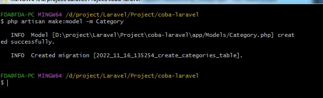
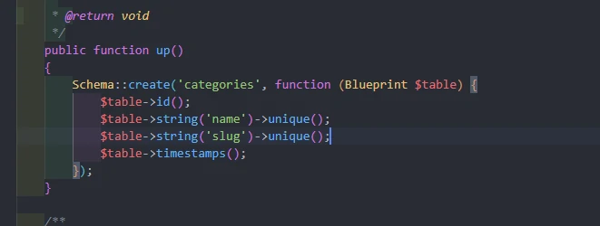

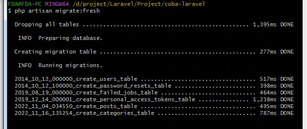
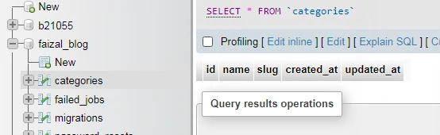
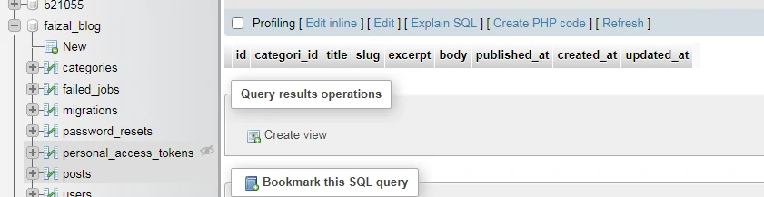
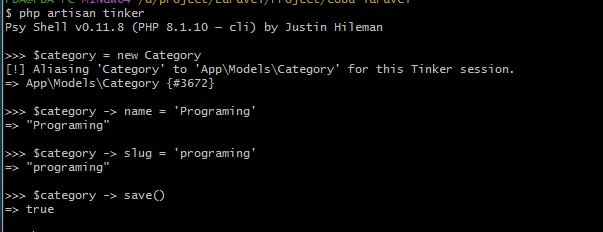
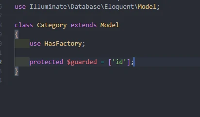
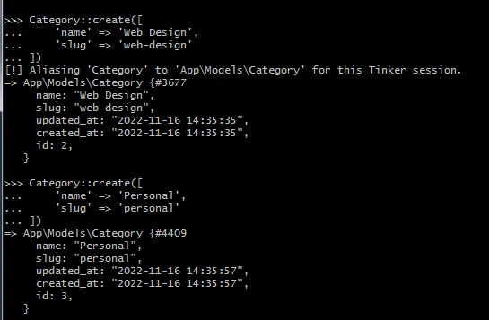
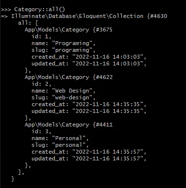
kita coba isi postingan
- isi datanya sebanyak 3x
- mencari postingan category programming
- akan lebih keren jika langsung tau nama categorynya apa
- karena sekarang bentuknya masih id
- kalo pakai SQL biasa itu harus join
- kalo dilaravel kita harus tentukan dulu releasionship antar modelnya

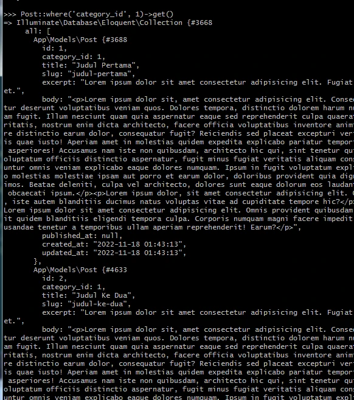
Eloquent Relationships
- table didalam database kita itu biasanya berelasi 1 sama lain
- sebuah blok post itu mungkin saja bisa memiliki banyak komentar
- komentar ini selain berelasi dengan postnya pasti juga berelasi dengan siapa yang menuliskannya
- nanti kemungkinan besar berelasi juga dengan table atau model user
- jadi post bisa berelasi dengan comment, bisa berelasi dengan user
- dengan Eloquent itu mengelola dan bekerja dengan Relationship ini menjadi mudah, dan mendukung beberapa macam relationship yang kita kenal didalam database
- jadi saran sebelum masuk kedalam eloquent ini, harus sudah paham dulu mengenai relasi antar table khususnya diMySQL, apa itu One to one, one to many, many to many
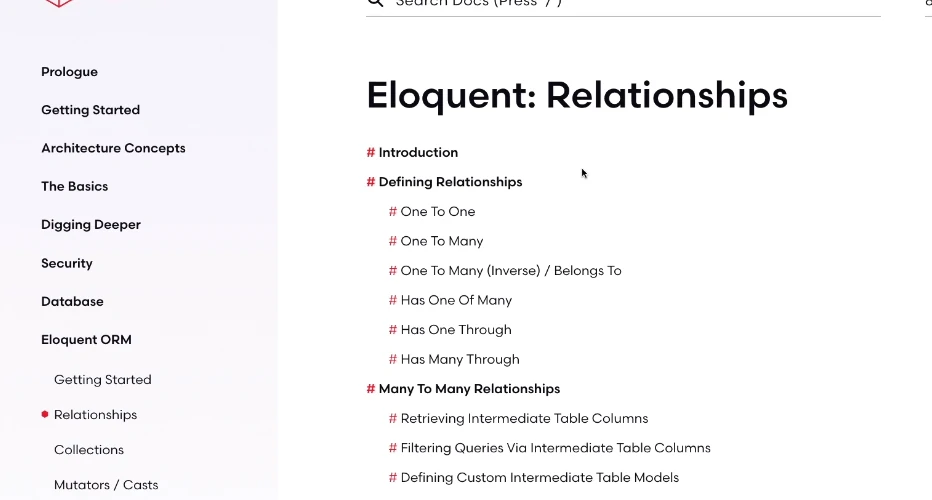
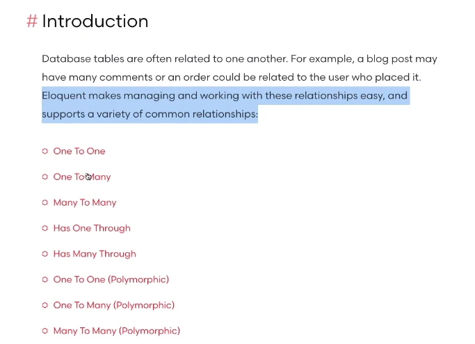
Table Relationship
- jadi categories berelasi dengan Post dengan foreign key category id
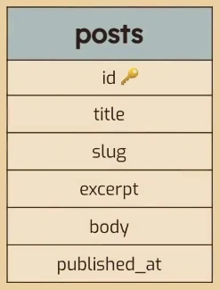
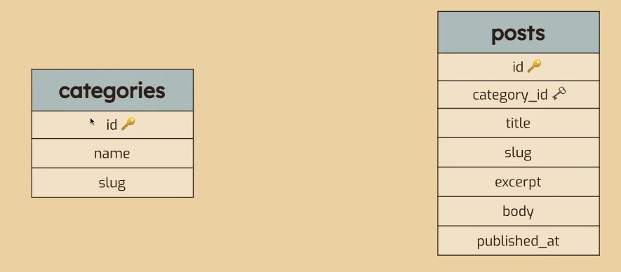
Cardinalitas / Cardinality
- apakah:
- One-to-One
- One-to-Many
- Many-to-Many
- kita tentukan dulu hubungannya mau gimana antara table categories ke table posts nya
- jadi 1 categories ini bisa memiliki banyak post
- one-to many
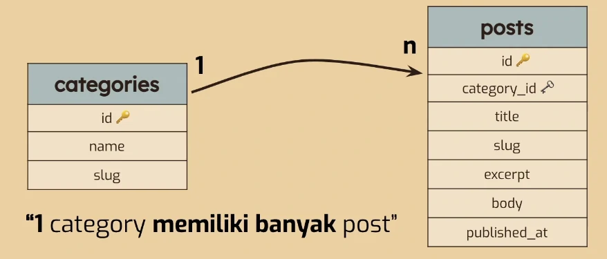
Cardinality (inverse)
- kita lihat dari sisi post ke categories
- kita pengen 1 post hanya memiliki 1 categories
- one-to-one
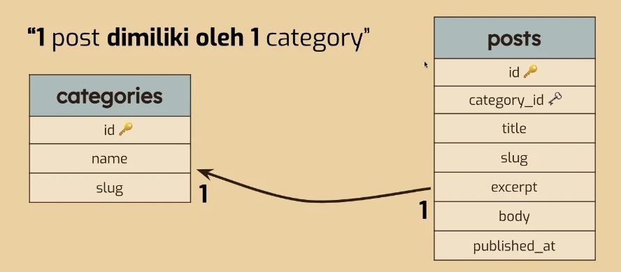
Relationship
- 1 categorirs hasMany Post
- 1 categories ke banyak post
- 1 Posts belongsTo 1 Categories
- 1 posts ke 1 categories
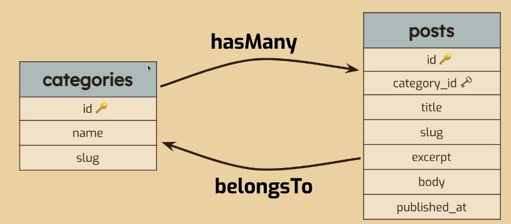
Relationship (contoh 2)
- kita akan menghubungkan posts ke table users
- postingan yang ditulis pastinya ada usernya
- sisipkan foreign key baru yaitu user_id, sebagai foreign key dari table users
- cara penulisan foreign key nya itu defaultnya adalah versi singular dari (nama table)_ id
- boleh pakai nama lain tapi harus dikasih tau ke laravelnya tapi kalo mau gampang contoh versi singularnya
- dari posts ke users itu : 1 ke 1
- karena : 1 postingan dimiliki oleh 1 user saja
- dari users ke posts : 1 users bisa memiliki banyak postingan
- nama relasinya apa
- 1 posts belongTo 1 Users
- 1 Users hasMany Posts
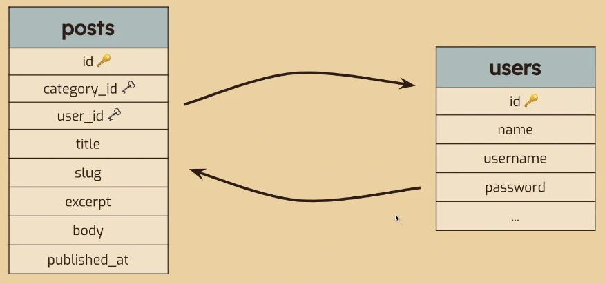
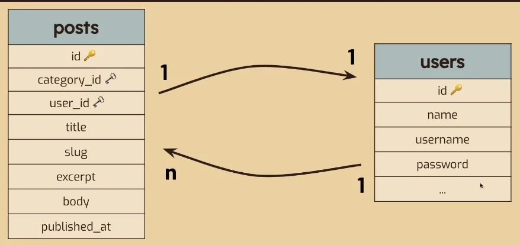
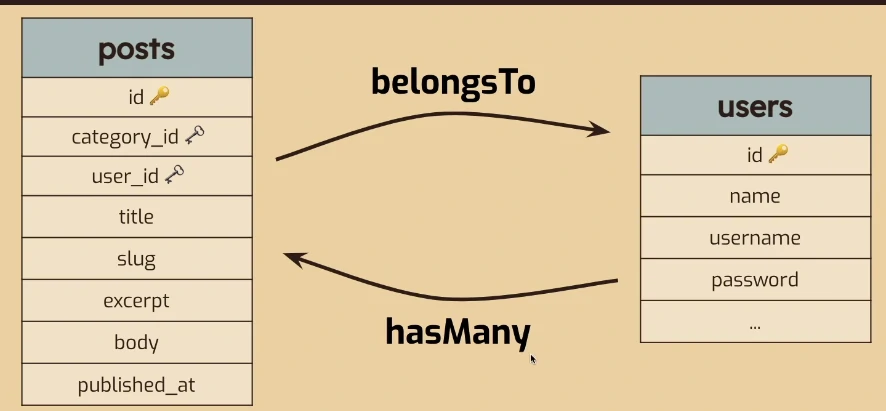
Relationship (contoh 3)
- Posts ke Comments
- 1 Post punya banyak comments
- 1 Post hasMany Comments
- 1 comments belongsTo 1 Posts
- Comments ke Users
- 1 Comments belongsTo 1 Users
- 1 Users hasMany Comments
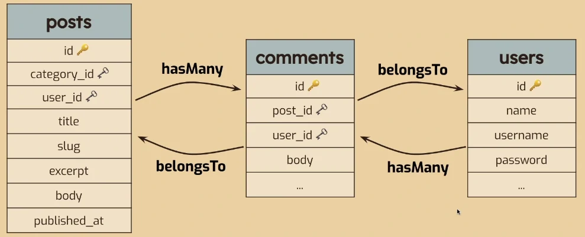
Coding
- buka file model Post.php
- kita cek apakah sudah berhasil
- ajaib, bahwa postingan pertama category id nya 1 maka mendapatkan seluruh instance dari table category
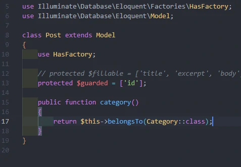
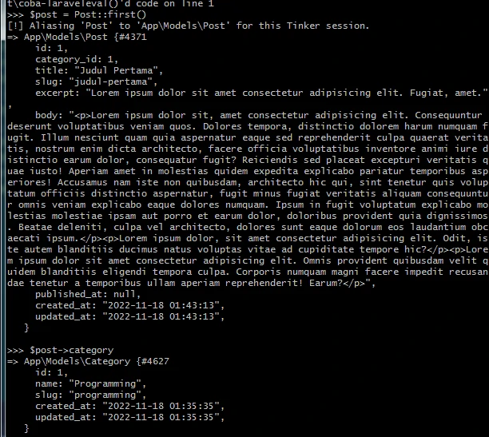
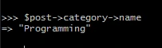
saat click 1 judul ada tulisan ditulis oleh siapa category apa
- buka view post.blade.php

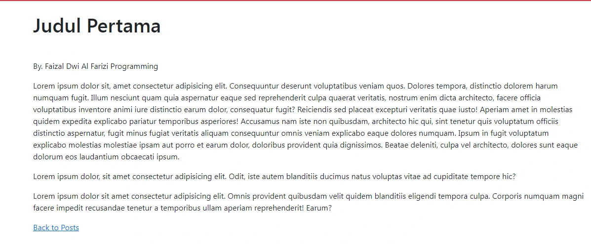
bikin programmingnya bisa diclick akan menampilkan semua yang postinganya category programming
- buka file view post.blade.php
- tapi kalo dibuka masih error karena kita belum bikin routes nya
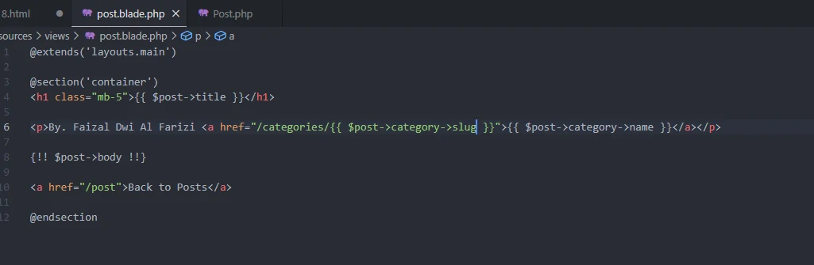
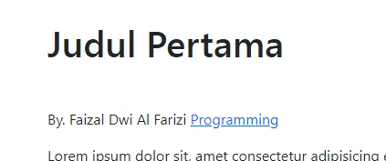
bikin routes nya ke categories
- buka route file web.php
- buat file view baru dengan nama category.blade.php
- coba kita jalankan
- hasilnya error karena post nya tidak ada isinya, kenapa tidak ada isinya?
- karena kita belum balikin relasinya
- ini baru relasi untuk post
- buka model category.php
- kalo kita coba pakai tinker dulu
- akan muncul 2 postingan yang categorynya programming
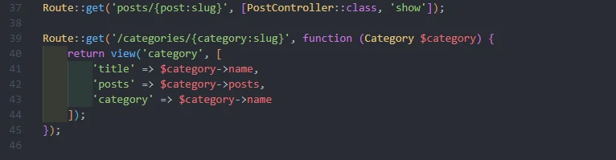
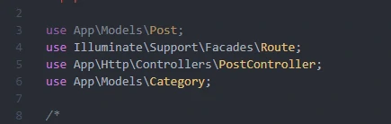
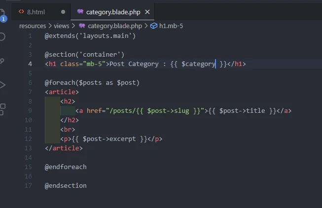
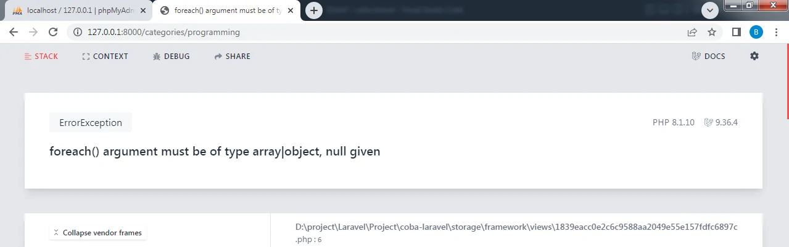
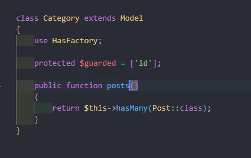
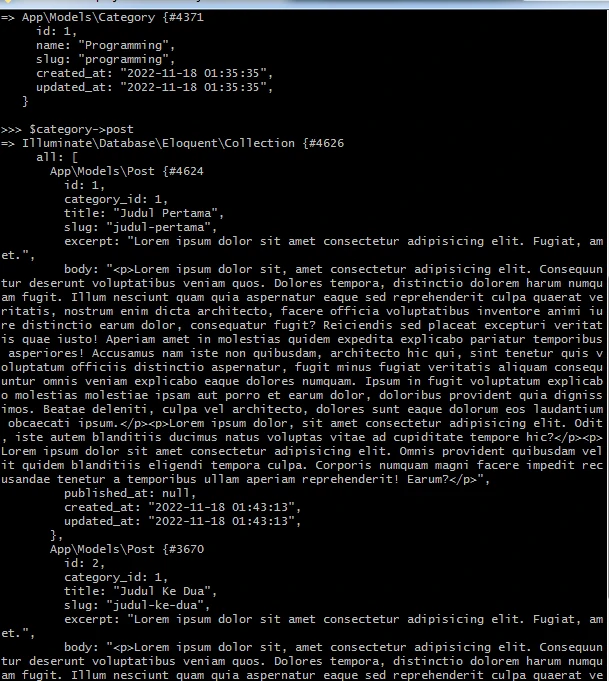
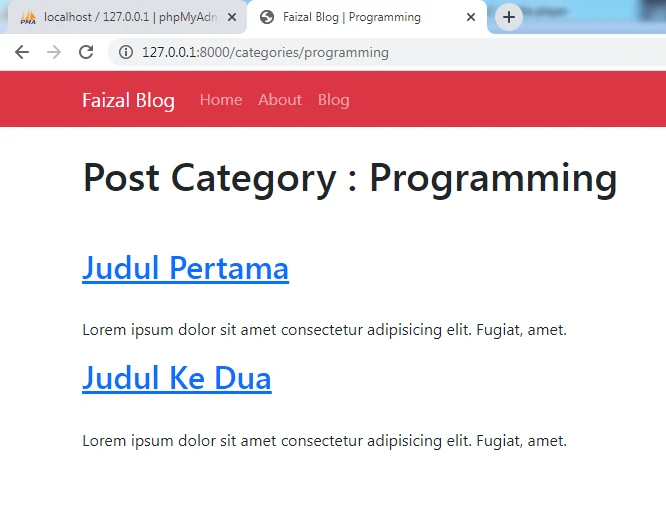
membuat 1 routes untuk menangani categories
- buka route web.php
- buat route untuk categories
- buat file view categories.blade.php
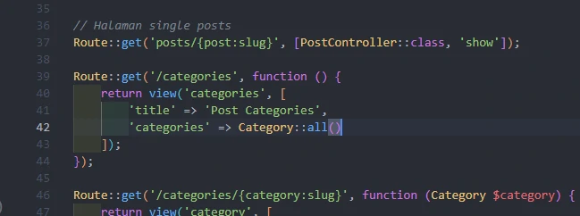

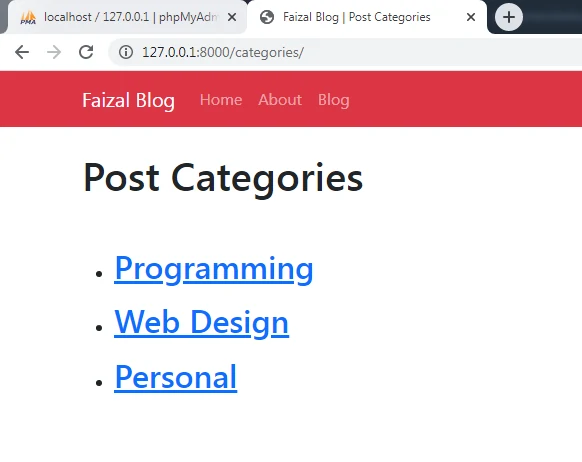